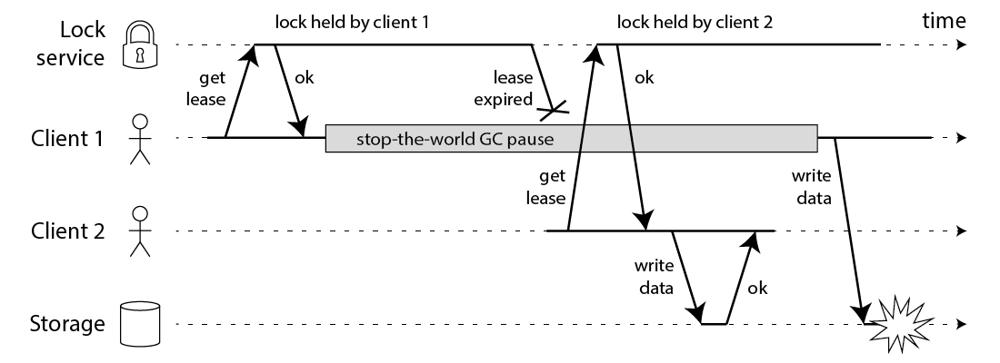
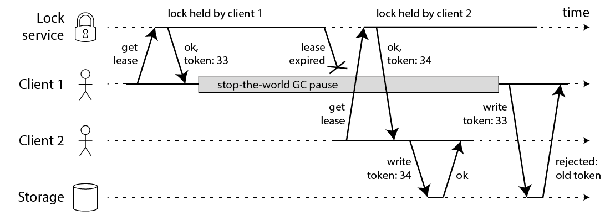

本文翻译自 How to do distributed locking，发布于 2016 年 2 月 8 日。
本文作者 Martin Kleppmann，软件工程师，企业家，剑桥大学分布式系统研究员、副教授，《设计数据密集型应用》（Designing Data-Intensive Applications）作者。
如何设计分布式锁
在我著作的调研中，我偶然在 Redis 网站上发现了一种叫 RedLock 的算法。该算法声称基于 Redis 实现了容错分布式锁(更准确来说叫租用锁)，并邀请分布式系统从业人员给予反馈。这种算法直觉上在我脑海里敲响警钟，故我思考多时，撰写此文。
由于已经有了超过十余种 RedLock 设计实现，我们并不知道有哪些系统依赖该算法，所以我认为值得公开分享我的笔记。我不会深入讨论 Redis 其他方面，尽管某些已在其他地方受到诸多讨论。
在详细介绍 RedLock 之前，先叠个甲，我非常喜欢 Redis，并将其用作生产。在共享一些临时、近似、多变的数据结构，并且在能接受少量数据丢失的情况下，Redis 是一个非常好的选择。比如说，用于 IP 地址访问的计数器(用于限流目的)，或者说根据不同用户 ID 维护不同的 IP 地址集合(滥用检测)。
然而，Redis 逐渐涉足一些对数据一致性和持久性有更高要求的领域，这让我感到非常担忧，这并不是 Redis 设计的初衷。按理来说，分布式锁属于上述的强一致性持久领域。下文我们详细探讨。
使用锁是为了什么?
锁的目的是确保在多节点访问或执行相似任务时，只有一个节点能够执行(至少一次只有一个节点执行)。这种任务可能是：将一段数据写入共享存储系统；执行某些计算；调用某些外部 API。在更高层次上，你的分布式系统引入锁的原因可能有两个：高效 或 安全。为了区分这两种情况，可以思考一下，如果锁失败了会发生什么：
- 效率上，获取锁能避免执行不必要的相同工作(例如：某些耗时计算)。如果获取锁失败，导致结果上两个节点执行了相同的任务，其后果只是成本略有增加(例如：你在 AWS 上多付了五分钱)或者造成轻微的不便(例如：用户收到了两封相同的邮件通知)。
- 正确性上，获取锁能防止并发进程相互干扰，避免系统异常。如果锁失效，两个节点并发处理相同数据，后果可能是：文件损坏、数据丢失、数据不一致、给患者开错了药或者其他严重的问题。
两者都是引入锁的有效场景，但是你需要清楚侧重在哪一方面。
要我说，如果仅仅是为了提高效率而使用锁，那么没有必要引入 RedLock 和它所带来的复杂架构与成本，它需要运行 5 个 Redis 实例并检查大多数来获得锁。相反，你只需要运行一个 Redis 实例就足够了，也许还要配置一个主从同步来防止单 Redis 宕机。
使用一个 Redis 实例，肯定会在 Redis 节点宕机时丢失部分锁，或者有其他的问题。但是你使用锁只是为了优化性能，并且这种崩溃也不是经常发生，不是一个什么大问题。这种“不是什么大问题”正是 Redis 大放异彩的地方。至少，如果你只依赖一个 Redis 实例，每个开发者都能清楚知道这些锁不安全，只能用于边缘功能。
另一方面来说，RedLock 算法依赖 5 个分布式节点的投票，乍一看似乎适合用在对锁的安全性要求很高的场景。不过，我将反驳这一观点。在下文中，我们首先假设锁必须得绝对安全，并且断言：如果两个不同客户端持有同一个锁，这就是发生了严重错误。
利用锁保护资源
我们暂时抛开 RedLock 的具体细节，仅讨论分布式锁的一般用法(不依赖于特定的锁定算法)。需要强调的是，分布式系统的锁与多线程应用中的互斥锁(mutex)不一样。不同的节点可能发生各种意想不到、彼此独立的故障，所以分布式锁较为比较复杂。
例如，假定你有一个客户端需要在共享存储(例如 HDFS 或 S3)中更新一个文件。客户端首先需要获取一个锁，然后读取文件，进行修改，把修改的文件写回去，最后释放锁。该锁防止两个客户端同时执行这个 读取 - 修改 - 写入 循环，因为这会导致更新的丢失。代码示例：
// THIS CODE IS BROKEN
function writeData(filename, data) {
var lock = lockService.acquireLock(filename);
if (!lock) {
throw 'Failed to acquire lock';
}
try {
var file = storage.readFile(filename);
var updated = updateContents(file, data);
storage.writeFile(filename, updated);
} finally {
lock.release();
}
}
不幸的是，即使你有一个完美的锁服务，上述代码仍然有问题。获取到损坏数据的图示：

上述例子中，获取锁的客户端1在持有锁后被暂停了一段时间 —— 例如因为 GC(垃圾回收) 启动。并且该锁有过期时间(即：这个锁是一个租用锁)，这通常来说是一个很好的主意(否则，当持有锁的客户端宕机，则这个锁永远都不会被释放)。然而，如果 GC 持续时间超过了锁的过期时间，并且客户端1没有意识到锁已释放，则可能会导致(丢失锁的)客户端1继续执行，并引起并发安全问题。
这个 Bug 并不只是存在于理论上： HBase 就曾经遇到过这个问题。一般情况下，GC 的暂停时间确实很短，但是“stop-the-world” GC 暂停时间可能会长达数分钟 —— 确实是足够释放锁了。即使是像 HotSpot JVM 里 CMS 这样所谓的"并发"垃圾回收器，也无法完全与用户代码并行运行 —— 同样不时地需要 STW。
开发者无法通过在写回之前检查锁的形式来修复这一问题。因为 GC 可以在任何地方暂停该线程，包括哪些可能造成很大麻烦的地方(在最后一次检查和写入操作之间)。
如果因为你的编程语言运行时没有长时间的垃圾回收暂停而暗暗感到庆幸，那么还有许多其他的原因可能导致你的进程暂停。也许你的进程正试图读取一个尚未加载到内存中的地址，因此可能会遇到页面置换而被内核暂停，直到从磁盘加载该页(；也许你的磁盘实际上是 EBS(Elastic Block Store)，不经意间通过亚马逊拥堵的网络同步地读取一个变量；也许有其他的进程在竞争 CPU 调度，而该进程恰好在调度树中遇到了一个黑色节点；也许有人不小心向进程发送了 SIGSTOP 信号。无论何种原因，你的进程都会暂停。
如果上述线程暂停的例子还是不能说服你，那么就想想，当向存储服务写回的时候，遇到了网路延迟。像以太网和 IP 这样的分组报文可能会无法预料地延迟数据包，并且这样的情况确实发生过：在 Github 上曾发生过的一起著名事件中，数据包被延迟了大约 90 秒。这意味着发送写回请求，该请求可能一分钟后才能到达存储服务器，此时锁可能已经被释放。
甚至在一些状态良好的网络中，这种问题也可能发生。你无法简单地对发生的时机做出任何假设，这就是为什么无论你使用什么分布式锁服务，上述代码从根本上来说都是不安全的。
利用边界检查确保锁的安全
解决这个问题的方法也非常简单：你需要在每次写入请求中引入一个边界令牌。在上文场景中，边界令牌可以是一个每次请求锁时递增的数字(例如：锁服务层面每次递增的一个数字)。这个过程示例如下图：

客户端1获取了令牌为 33 的租用锁后，进入了一段长时间 GC 暂停，并且锁超时释放。客户端2获取到令牌为34的锁(令牌数字已经增加)，并且向存储服务发送了包含 34 号令牌的写请求。之后，客户端1恢复运行并且发送了它的 33 号令牌的写请求。然而，存储服务器已经收到了比它(33 号令牌)更晚的令牌数字(34 号令牌)，所以存储服务器拒绝了 33 号令牌的写请求。
需要注意，上述操作需要存储服务器主动检查令牌，并拒绝旧令牌的写入操作。但是，一旦你掌握了技巧，这个操作不难实现。只需要锁服务生成严格单调递增的令牌，就能确保锁的安全性。例如，如果你使用 ZooKeeper 作为锁服务，你可以使用 zxid 或者 znode 的版本号作为边界令牌，这样你就能轻松地实现边界检查。
但是，这就导致我们发现了 RedLock 第一个严重问题：它没有提供任何生成边界令牌的能力。这个算法在每次客户端请求锁时，不能保证生成一个递增数字。这意味着，即使该算法在其他方面完美无瑕，它也不安全。因为你无法防止客户端暂停或数据包延迟情况下，客户端之间的竞态条件。
对我来说，如何修改 RedLock，使其能够生成边界令牌的方法并不明朗。它使用的唯一随机值不能提供需要的单调性。仅仅在一个 Reids 节点上维护计数器不够安全，因为单节点可能发生故障。在多个节点维护计数器则还需要考虑同步问题。很可能你需要为了生成安全的隔离令牌，而引入一个新的共识算法。
利用时间来确保共识
无法生成边界令牌这个问题，就已经足够在利用锁保持正确性的场景下抛弃 RedLock 这个解决方案了。但是还有一些问题值得讨论。
在学术文献中，对于这类算法而言，最实用的系统模型是带有可靠故障检测器的异步模型。通俗来说，这意味着算法不依靠时间：进程可能会暂停任意一段时间，数据包在网络中可能被任意延迟，时钟可能会出现任意错误——尽管如此，算法依然能正确运行。根据我们之前的讨论，这些假设是完全合理的。
算法使用时钟的唯一目的是完成“超时释放”的能力，以避免在节点宕机时无限等待。但是超时并不一定准确：仅仅凭请求超时是无法断言另一个节点一定宕机——也可能是网络延迟较大，或者本地时钟错误。当检测故障时，超时只是一种对异常情况的猜测(如果可以的话，分布式系统应该完全丢弃时钟，但这样就无法达成共识。获取锁就像是一个CAS操作，需要达成共识)。
需要注意的是，Redis 使用 gettimeofday 而不仅仅只是单调时钟来确定键的过期时间。gettimeofday 的手册中明确指出，它返回的时间可能会收到系统时间不连续跳跃的影响——也就是说，时钟可能会突然跳跃几分钟，甚至可能会回退(例如，NTP发现本地时钟与NTP服务器差异过大而调整时钟，或者运维手动调整时钟)。因此，如果系统时钟出现异常，Redis 中键的过期时间可能会比预期时间快得多或慢得多。
对异步模型来说，时钟不算什么大问题：这些算法通常能在任何情况下确保其安全性，无须强依赖任何时钟。只有存活检测才依赖于超时或其他故障检测器。简单来说，这意味着即使系统中的时空一团乱麻(进程暂停、网络延迟、时钟前后跳跃)，算法的性能可能会大打折扣，但绝对不会出错。
然而，RedLock 并非如此。它的安全性依赖于时钟：它假设所有 Redis 节点在过期前都会持有锁相似长度的时间；网络延迟与过期时间相比很小；并且进程暂停时间远远短于过期时间。
利用错误的时间破解 RedLock
以下给出一些示例，以说明 RedLock 对时间的依赖性。假设系统有五个 Redis 节点 ABCDE，以及两个客户端 1 和 2。如果其中一个节点的时钟向前跳跃，会发生什么?
- 客户端1 向 ABC 节点申请锁，因为网络问题，DE 不可达。
- C 的时钟向前跳跃，导致锁过期。
- 客户端2 向 CDE 节点申请锁，因为网络问题，AB 不可达。
- 客户端1 2 都认为自己获取到了锁。
相似的问题也会发生在，C节点崩溃并且没有把锁持久化到磁盘中，C 被立即重启。因此，RedLock 官方手册建议所有在C崩溃前，集群拥有的锁都过期后再延迟重启崩溃节点[1]。但在实践中，这种重启延迟也依赖于准确的时钟，如果发生事件跳跃，则会失败。
也许，你认为时间跳跃是不可能发生的，因为你对配置的 NTP 服务非常有信心。那么，在这种情况下，我们来举一个进程暂停导致算法失败的例子：
- 客户端1 向 ABCDE 节点申请锁。
- 当节点的成功响应在传播途中，客户端1 进入了 STW GC。
- 所有节点的锁都过期了。
- 客户端2 向 ABCDE 节点申请锁。
- 客户端1 结束 GC，收到了成功响应，认为自己成功获取了锁(当客户端1 暂停时，这个响应暂存于客户端1 的内核网络缓存区)。
- 客户端1 和 客户端2 都认为自己获取了锁。
注意，即使 Redis 由 C 语言编写，没有垃圾回收。但这并不能代表什么，任何有 GC 的客户端都存在这个问题。你只能通过防止客户端1 在 客户端2 获得锁之后执行任何锁定操作来确保安全，例如使用上述的防护方法。
一个长时间的网络暂停也可能造成和进程暂停相似的效果。这可能是因为你 TCP 连接超时——如果你设置的时间比 Redis 的 TTL 还短，那么延迟的数据包可能被忽略，但要明确一点，我们必须详细查看 TCP 的实现。此外，涉及超时设置，我们又回到了测量时间的准确性的问题上。
RedLock 的同步性假设
以下这些例子向你说明了：RedLock 只有在同步系统模型的情况下才能正确工作，也就是说，该系统需要具备以下特性：
- 有限的网络延迟(可以保证数据包的最大延迟)
- 有限的进程暂停(换句话来说，就是硬性实时约束，这通常只在汽车安全气囊等类似系统中才能找到)
- 有限的时钟误差(希望你的时间不是从一个糟糕的 NTP 服务器获取的，双手合十，祝你好运)
注意，同步模型不意味着时间同步：它意味着网络延迟、进程暂停和时钟跳跃都有一个已知且固定的上限。RedLock 假设延迟、暂停和时钟跳跃都远远小于锁的生存时间；如果这三个因素和锁的时间差不多，该算法就存在安全上的问题。
在数据中心环境中，即使大部分时间，时序都运行良好(即部分同步系统)，这也不足以保证 RedLock 算法的安全性。一旦这些时序假设被打破，RedLock 就会出现安全问题，例如一个锁的租用到期之前就授予新的锁给另一个客户端。如果你的系统对锁的安全性要求很高，那么“大部分时间”的正确性是不够的——你需要它完全、始终正确。
在绝大多数实际系统环境中，假设“同步系统模型是安全的”这一想法并不靠谱，有大量数据能反驳这一点。要牢记 Github 那次 90 秒数据包延迟的事件，它就是一个警示。RedLock 很难通过 Jepsen 测试。
从另一方面来说，在部分同步系统模型下设计的公式算法实际上有可能正常工作。Raft、Viewstamped Replication、Zab和 Paxos 都属于这一类。这样的算法必须完全放弃所有有关时钟的假设。这是很艰难的，因为人们总是倾向于认为网络、进程、时钟比实际情况更可靠。但子啊分布式系统的复杂现实中，你必须非常小心地对待你的假设。
结论
我认为 RedLock 不是一个好的算法，因为它有点“四不像”：在依靠锁提升性能的场景下，它太庞大，不值得引入；在依靠锁确保安全的情况下，它又不绝对安全。
特别是，RedLock 算法对时间和系统时钟做出了危险的假设(基本上假设了一个有限的网络和操作执行耗时)，并且如果这些假设不成立，则无法保证安全。此外，该算法无法生成边界令牌(边界令牌保护系统免受长时间暂停或网络延迟影响)。
如果你引入锁仅仅是为了性能(只是优化性能，不是为了正确性)，我建议坚持使用 Redis 单节点锁算法(通过 set-if-not-exists 加锁，通过 delete-if-value-matches 释放锁)，并且在代码中明确注明：这个锁不安全，可能偶尔失效。而不是去苦哈哈地运行五个 Redis 节点。
另一方面来说，如果你需要锁来确保正确性，那也不要用 RedLock。你应该使用严格的一致性系统，如 ZooKeeper，可以通过 Curator 来实现锁(至少，要使用具有合理事务保证的数据库)。并且，务必在锁中强行使用边界令牌，以保护资源访问。
如我开头所说，如果你使用得当，Redis 是相当优秀的。上述内容没有贬低 Redis 在其预期用途中的作用。Salvatore 多年来一直非常专注于这个项目，Redis 大获成功当之无愧。但是，每种工具都有其局限性，了解这些局限并合理利用是非常重要的。
如果你想要了解更多，我在我的书中第 8 章和第 9 章更详细地讨论了这个问题，该书可以在 O’Reilly 的 Early Release 中获取(上面的图表是从我的书中摘录的)。对于学习如何使用 ZooKeeper，我推荐 Junqueira 和 Reed 的书。对于分布式系统理论的入门，我推荐 Cachin、Guerraoui 和 Rodrigues 的教科书。这两本书都是深入学习相关领域的优秀资源。
感谢 Kyle Kingsbury、Camille Fournier、Flavio Junqueira和 Salvatore Sanfilippo 审阅这篇文章的草稿。
2016年2月9日更新：Redlock 的原作者 Salvatore 对这篇文章进行了反驳(也可见 HN 上的讨论)。他提出了一些很好的观点，但我坚持我的结论。如果我有时间，我可能会在后续文章中详细阐述，但请你自己形成观点——并请参考下面的参考文献，其中许多都经过了严格的学术同行评审(与我们两人的博客文章不同)。
[1]在原文意思中，作者以直白的方式指出，应当就以所有锁中最长时间的锁过期时间为值，延期重启崩溃节点。为了方便中文语境理解，故改写部分内容。这也是为什么后文提到重启延迟依赖于准确时钟。
原文：For this reason, the Redlock documentation recommends delaying restarts of crashed nodes for at least the time-to-live of the longest-lived lock.
[*]引用文献未译。